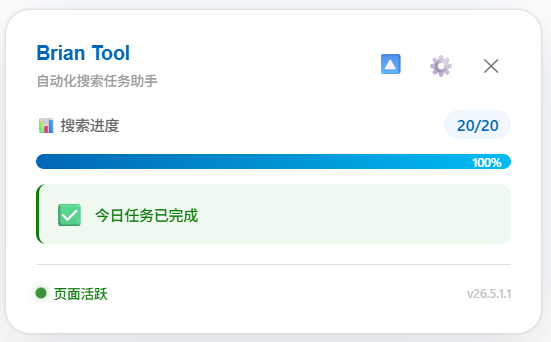
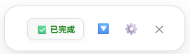
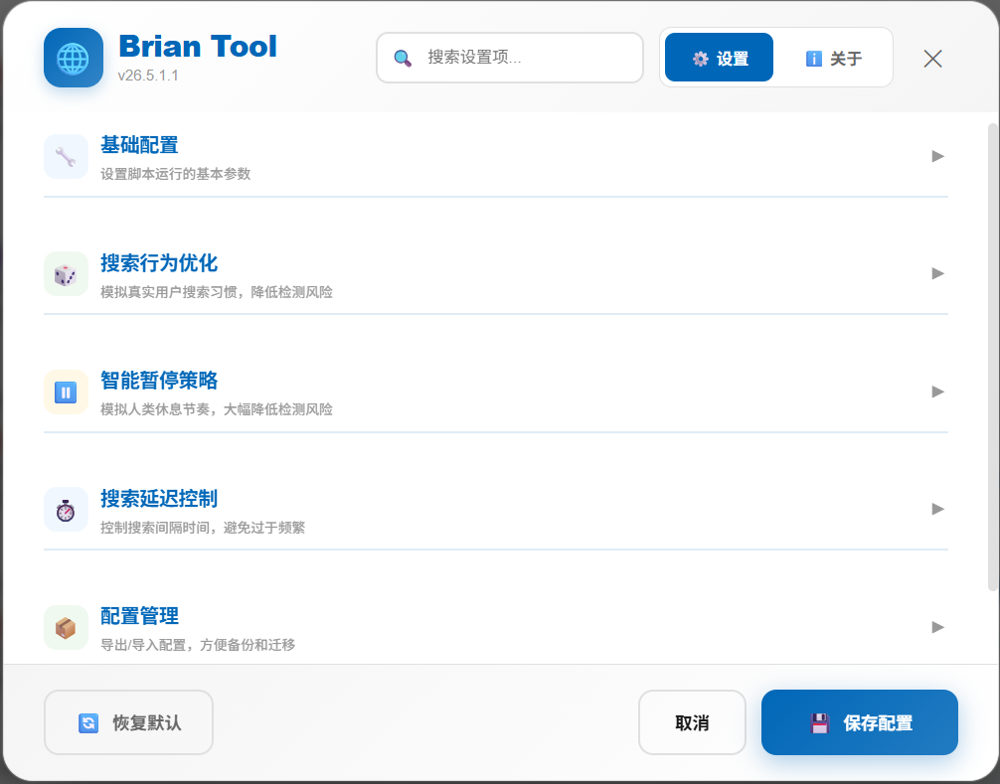
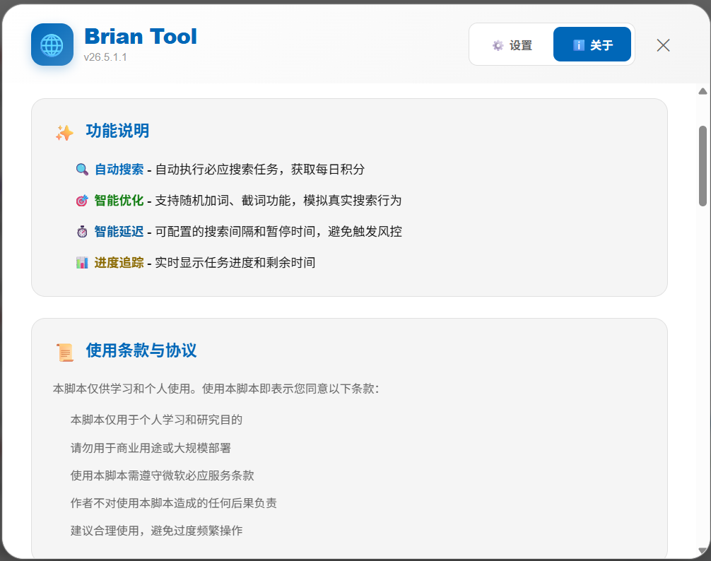

🌐 浏览器脚本版（推荐）¶
纯粹的前端用户脚本，运行于浏览器沙盒环境，跨平台支持，轻量便捷，官方推荐版本。
| 项目 | 说明 |
|---|---|
| 技术栈 | JavaScript (ES6+) + Violentmonkey API |
| 当前版本 | 26.10.31.2 |
| 安装方式 | 一键安装，无需构建，自动更新 |
✨ 核心特性¶
- 全自动执行：一键启动，自动完成当日所有搜索与日常任务，实时显示进度
- 日常任务自动点击：自动点击待完成且有积分的日常任务及 Dashboard
#dailyset区域未完成任务 - APP 端任务：支持 APP 端每日签到与资讯阅读，一键授权、令牌自动续期，实时显示阅读 X/Y 进度
- 安全模拟：支持热搜词 / 自定义词 / 混合三种来源，随机加词、截词、滚动与延迟
- 隐私保护：纯前端运行，不收集、不上传任何 Cookie 或个人信息
- 现代 UI：实时状态面板、图形化设置、自动适配暗色模式
🚀 快速开始¶
1. 安装脚本管理器（Violentmonkey）¶
| 浏览器 | 安装地址 | 说明 |
|---|---|---|
| Google Chrome | Chrome 网上应用店 | ✅ 推荐 |
| Firefox | Firefox 附加组件商店 | ✅ 可用 |
| 其他 Chromium 浏览器（Brave、Cent 等） | 使用上方的 Chrome 网上应用店链接 | ✅ 可用 |
| ~~Microsoft Edge~~ | Edge 加载项商店 | ⚠️ 不推荐，见下方说明 |
不建议使用 Edge
新版 Microsoft Edge 在 rewards.bing.com 页面存在脚本注入问题，会导致 dashboard 与 earn 任务不执行。若遇到任务不执行，请改用 Chrome 等其他浏览器。
注意
若非从官方商店安装，请在浏览器扩展管理页面开启「开发者模式」。
2. 安装脚本¶
👉 一键安装脚本，在确认页面点击「安装」即可。
自动更新
脚本通过 @updateURL 自动检查更新，后续版本发布后无需手动重装。
3. 配置参数¶
必填配置
searchFormParam（搜索 form 参数）默认值为 QBLH，必须修改。
获取方法：登录后访问 cn.bing.com 执行几次搜索，查看地址栏 URL 中 form=xxx 的值，在设置页「搜索设置」分组替换「搜索表单参数」。
设置页分组
设置页按功能分为 6 个分组：搜索设置、搜索节奏、行为模拟、任务点击、APP端任务、界面与配置；下文按分组逐一说明。
可选配置：
| 配置项 | 默认值 | 说明 |
|---|---|---|
| 最大搜索次数 | 20 |
根据个人需求调整 |
| 搜索词来源 | 热搜词 | 可选热搜词 / 仅自定义词 / 混合，详见下方「自定义搜索词使用说明」 |
| 自定义搜索词 | 空 | 粘贴自己的词库，最多 2000 个有效词 |
| 随机加词/截词 | 关闭 | 开启后增强行为真实性 |
| 暂停间隔 | 区间随机 | 模拟真人使用习惯 |
4. 运行脚本¶
- 打开 www.bing.com 并确保已登录微软账户
- 点击工具栏 Violentmonkey 图标 → 菜单中点击 「开始Bing任务」
- 页面顶部显示进度面板，保持标签页前台激活，任务完成后自动停止
清除当天任务缓存
菜单中的 「🧹 清除当天任务缓存」 会清除当天的任务点击标记（日常任务 / 每日活动）、搜索次数与当日终止标记、APP 签到与阅读进度。若出现「面板显示完成但日常任务 / 每日活动实际未完成」，或当天需要重新执行一遍，可先清除缓存再点击「开始任务」。
完成
任务执行完成后，Rewards 积分将自动到账，可在 rewards.bing.com 查看。
📸 界面预览¶
展开状态 - 完整信息展示

收起状态 - 紧凑模式

设置面板

关于面板

⚙️ 配置参数详解¶
设置页按功能分为 6 个分组，与下文各节一一对应：
| 设置页分组 | 包含设置项 |
|---|---|
| 搜索设置 | 搜索表单参数、每日最大搜索次数、搜索词来源、自定义搜索词 |
| 搜索节奏 | 搜索间隔、暂停间隔、暂停时长 |
| 行为模拟 | 随机加词/截词、加词/截词概率、点击搜索结果链接 |
| 任务点击 | 自动点击任务总开关、滚动等待、点击间隔、最大重试、重试延迟、关闭延迟 |
| APP端任务 | APP每日签到、APP资讯阅读（含每日上限）、设备标识（UA）、APP授权 |
| 界面与配置 | 面板默认显示状态、导出/导入配置、恢复默认 |
设置页布局
宽屏下按分组自动铺排：搜索设置、搜索节奏为 3 列，行为模拟、任务点击最多 4 列，APP端任务、界面与配置为 2 列；窗口变窄时依次降为 2 列、1 列。
搜索设置¶
| 参数 | 默认值 | 说明 |
|---|---|---|
searchFormParam |
QBLH |
搜索 form 参数，必填 |
maxSearches |
20 |
最大搜索次数 |
searchWordSource |
hot |
搜索词来源：hot 热搜词 / custom 仅自定义词 / mixed 混合（自定义词优先，不足时用热搜词补足） |
customSearchWords |
空 | 自定义搜索词，设置页直接粘贴；最多 2000 个有效词，自动去重并过滤少于 2 字、超过 30 字与纯数字的词 |
自定义搜索词使用说明¶
三种搜索词来源
- 热搜词（
hot）：保持默认，自动抓取微博/头条等热榜 - 仅自定义词（
custom）：只使用你填写的词，不请求热搜接口 - 混合（
mixed）：优先使用自定义词，不足每日搜索次数时用热搜词补足；留空时自动回退热搜
使用步骤¶
- 打开
www.bing.com，点击状态面板右上角 ⚙️ →「设置」。 - 在「搜索设置」区找到「搜索词来源」，按需选择
仅自定义词或混合。 - 在「自定义搜索词」文本框粘贴词库，一行一个（也支持中英文逗号、分号分隔）。
- 文本框下方会实时显示「已识别 N 个有效词」，确认数量后点击「保存配置」，页面会自动刷新。
- 点击面板「🚀 开始任务」，日志出现
使用自定义搜索词 N 个即表示已生效。
词库格式与限制¶
| 规则 | 说明 |
|---|---|
| 分隔符 | 换行、中英文逗号 , ，、中英文分号 ; ；；空格不作为分隔符 |
| 单条长度 | 2–30 个字符，过短或过长会被忽略 |
| 纯数字 | 会被忽略（如 123） |
| 重复词 | 自动去重，只保留第一次出现 |
| 数量上限 | 最多 2000 个有效词，超出部分不生效 |
| 留空 | 仅自定义词 模式保存时会被拦截；混合 / 热搜词 模式留空则使用热搜词 |
数量建议¶
- 建议词库数量不少于「每日最大搜索次数」（默认 20），例如准备 20–50 个自然词。
- 词库少于每日次数时会循环使用，同一天可能出现重复搜索词。
- 开启「随机加词 / 随机截词」后，自定义词也会被二次加工（如插入随机字符、截短），属正常现象。
如何生成搜索词（可交给 AI）¶
没有现成词库时，可以把下面的提示词发给任意 AI，替换其中的【数量】和【兴趣/行业】，再把结果直接粘贴到设置页。
请帮我生成【数量】个适合在必应搜索的中文搜索词，主题偏向【兴趣/行业，例如：数码产品、家常菜、旅游、职场办公】。
要求：
1. 每个搜索词 2–30 个字符，像真实用户会输入的自然短语；
2. 一行一个，不要编号、不要解释、不要加引号，不要使用逗号或分号；
3. 不要纯数字，不要重复，不要包含网址、邮箱、电话号码；
4. 主题尽量分散，避免全部相似；
5. 只输出搜索词列表本身。
示例（可直接复制）：
请帮我生成 30 个适合在必应搜索的中文搜索词，主题偏向数码产品、家常菜和周末短途旅行。每个词 2–30 个字符，一行一个，不要编号、解释、引号、逗号或分号；不要纯数字、重复、网址、邮箱、电话；只输出搜索词列表。
生成后：
- 建议生成 20–50 个，数量不少于「每日最大搜索次数」；需要更多时最多可粘贴 2000 个有效词。
- 粘贴到「自定义搜索词」后，看下方「已识别 N 个有效词」是否与预期一致。
- 若数量偏少，通常是 AI 输出了纯数字、单字词、超过 30 字的长句，或使用了空格/换行以外的分隔符。
- AI 生成的词未经人工筛选，使用前建议快速检查是否重复、过长或过于相似。
示例¶
以上内容最终会识别为 7 个有效词（换行、逗号、分号均可混用）。
数据与生效范围
- 自定义词仅保存在浏览器本地（
GM_setValue），不会上传；仅自定义词模式不会请求热搜接口。 - 配置导出/导入会包含自定义词库。
- 保存后需刷新页面生效；词库仅影响搜索任务，不影响 APP端任务与任务点击分组。
搜索节奏¶
| 参数 | 默认值 | 说明 |
|---|---|---|
minDelay / maxDelay |
15s / 30s |
两次搜索之间的延迟区间 |
pauseIntervalMin / pauseIntervalMax |
2 / 3 |
每执行多少次搜索后暂停一次 |
pauseTimeMin / pauseTimeMax |
20min / 30min |
每次暂停的持续时间区间 |
浏览器选择
新版 Microsoft Edge 在 rewards.bing.com 页面存在脚本注入问题，会导致 dashboard 与 earn 任务不执行。推荐使用 Chrome 等其他浏览器。同时建议关闭标签页休眠/内存节省功能（Chrome：chrome://settings/performance），避免标签页休眠中断任务。
行为模拟¶
| 参数 | 默认值 | 说明 |
|---|---|---|
randomAddSearchWords |
关闭 | 随机加词（如：人工智能发展 → 人工1智能发z展） |
randomAddSearchWordsFactor |
0.3 |
加词概率（0-1 小数） |
randomCutSearchWords |
关闭 | 随机截词（如：人工1智能发z展 → 人工1智） |
randomCutSearchWordsFactor |
0.2 |
截取概率（0-1 小数） |
clickSearchResults |
关闭 | 搜索完成后随机点击 1 个结果链接；首次需允许弹窗 |
任务点击¶
Edge 下任务不执行
若 dashboard 与 earn 任务始终不执行，通常是新版 Edge 在 rewards 页面注入失败所致，请改用 Chrome 等其他浏览器。
仅支持新版页面
任务点击功能（含「自动点击任务」总开关）仅支持新版 Microsoft Rewards 页面，旧版页面上的任务不会被自动点击。
总开关默认关闭
「自动点击任务」总开关默认关闭，需在设置页「任务点击」分组内手动开启后才会执行 earn 日常任务与 dashboard 每日活动区域任务的自动点击；已保存过设置的用户不受影响，沿用其当前配置。
| 参数 | 默认值 | 说明 |
|---|---|---|
autoClickTasks |
false |
「自动点击任务」总开关（设置页勾选项） |
tasksScrollDelay |
3000 |
任务区滚动延迟（毫秒） |
tasksClickDelay |
2000 |
卡片滚动定位后的等待与两次点击的间隔（毫秒），过短会导致服务端未记录活动 |
tasksMaxRetries |
0 |
最大重试次数 |
tasksRetryDelay |
2000 |
重试间隔（毫秒） |
tasksCloseTabDelay |
1500 |
任务标签页关闭延迟（毫秒） |
参数兼容性
旧版本的 earnTasks* / dashboardTasks* 参数会自动迁移到统一的 tasks* 参数体系；从旧版本导出的配置文件也会自动映射，无需手动调整。
APP端任务¶
一键授权
APP 端任务需授权微软账户：开启任意 APP 端开关后，首次运行会弹出微软登录授权页，同意后脚本自动获取并缓存令牌，令牌过期后自动续期，无需重复操作。
| 参数 | 默认值 | 说明 |
|---|---|---|
appCheckInEnabled |
false |
APP 端每日签到开关 |
appReadEnabled |
false |
APP 端资讯阅读开关 |
appReadDailyLimit |
10 |
APP 端资讯阅读每日上报上限（篇） |
appUaPreset |
android-16-xiaomi15 |
APP 端设备标识预设（Android / iOS 多机型可选） |
设备标识预设
设置页「APP端任务」分组的「APP 设备标识（UA）」下拉框可切换机型预设，并实时预览 UA。上报异常时先换回默认安卓预设；切换后无需重新授权，保存并刷新页面生效。
执行顺序
APP 端任务仅在开启时参与执行，顺序为 dashboard → earn → APP 签到 → APP 阅读 + 搜索；已完成的任务当日自动跳过，阅读进度以 X/Y（已完成/总数）积分形式实时显示在展开面板中。
界面与配置¶
| 设置项 | 默认值 | 说明 |
|---|---|---|
| 面板默认显示状态 | 展开 | 对应 panelDefaultCollapsed：false 展开 / true 收缩；脚本加载时生效，可随时手动切换 |
| 导出配置 | — | 下载 JSON 文件，包含全部可配置参数（含自定义搜索词）与版本信息 |
| 导入配置 | — | 选择 JSON 文件覆盖当前设置，确认后页面自动刷新生效 |
| 恢复默认 | — | 底栏按钮，将全部设置项恢复为默认值，需再次点击「保存配置」才写入 |
备份与迁移
- 更换浏览器或设备前，先用「导出配置」备份；导入完成后页面会自动刷新。
- 导入仅覆盖可配置参数（
CONFIG_SCHEMA），不包含 APP 授权令牌、当日任务缓存等运行数据。 - 「恢复默认」会清空自定义搜索词与自定义参数，请先导出备份。
🛠️ 技术架构¶
- 运行环境：浏览器沙盒（Violentmonkey 注入到
https://*.bing.com/*） - 核心 API：
GM_xmlhttpRequest（热词获取）、GM_setValue/GM_getValue（配置持久化）、GM_registerMenuCommand（菜单命令） - 配置存储：所有可配置项通过
CONFIG对象统一管理，getter/setter 绑定 GM 存储 - 数据安全：纯前端运行，所有数据仅存储在本地浏览器
📋 注意事项¶
- ✅ 使用前必须在 Bing 网页版登录微软账户
- ✅ 浏览器标签页需保持前台激活状态
- ✅ 需稳定访问 Bing 国际站（
www.bing.com） - ✅ 推荐使用 Chrome 等 Chromium 浏览器，并关闭标签页休眠/内存节省功能（
chrome://settings/performance） - ⚠️
rewards.bing.com根域名已被排除在脚本注入范围之外 - ⚠️ 新版 Microsoft Edge 在
rewards.bing.com页面存在脚本注入问题，会导致 dashboard 与 earn 任务不执行
风险提示
极短时间内完成全部每日搜索限额、频繁切换网络 IP、每日精准获取满分积分等行为可能增加账号风险，请模拟真人使用习惯，合理使用。
📌 版本历史¶
完整的更新日志与版本号说明已独立成页，请查看 版本历史。